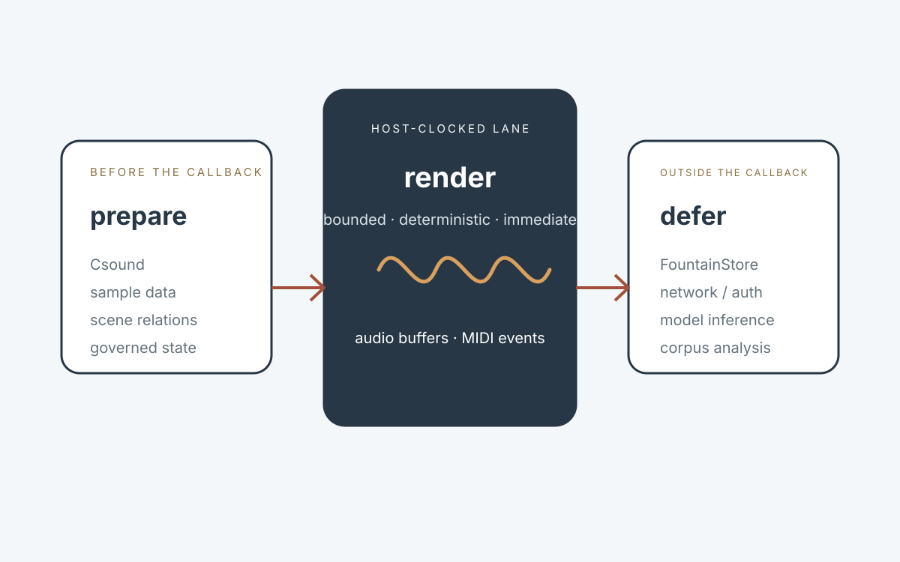
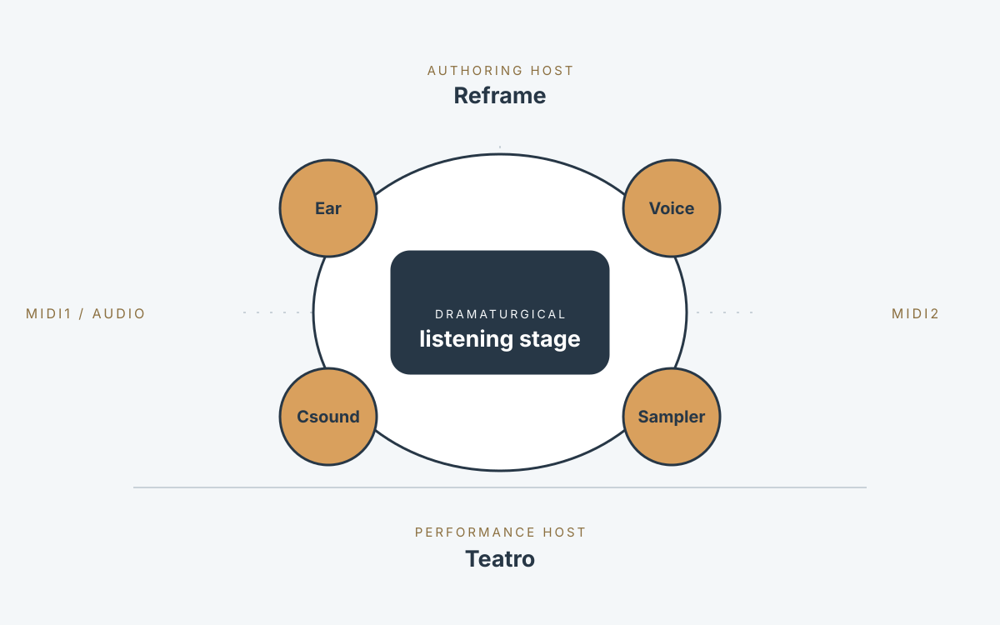

1. Executive proposition
Fountain Coach can be understood as a performance ecosystem in which literature, sound, reasoning and staging are not separate production phases. Reframe, already a macOS .fountain editor and story editor by nature, becomes capable of hosting Audio Unit v3 instruments directly and of compiling a writer-selected story state into a playable graph. The writer can write, stage, hear, see, reason and return to the text without leaving the authoring environment.
The ecosystem does not depend on Reframe as the only host. The same Fountain Audio Units remain ordinary AUv3 citizens and can run in AUM on iPadOS. This dual-host model is intentional: Reframe is the story-aware, authored host; AUM is the independent interoperability and reference host. The instruments must not rely on hidden privileges available only inside Reframe.
2. Authority and scope
The proposal preserves the nomenclature and authority boundaries already established in Fountain Coach. It does not turn Reframe into a general-purpose DAW, FountainStore into an audio engine, Teatro into a waveform visualizer, or MIDI2 into an audio transport.
| Element | Role |
|---|---|
| Reframe | macOS story editor, .fountain authority, reading/writing surface, semantic staging surface, and native AUv3 host. |
| AUM | Independent iPadOS AUv3 host and interoperability target. It remains useful exactly because it is not controlled by Fountain Coach. |
| Fountain Instruments | Independently loadable AUv3 components carrying sound, listening, reasoning, voice, stage, authentication or other roles. |
| MIDI1 | Compatibility language at ordinary host edges where the host exposes MIDI1. |
| MIDI2 | Machine-readable relation, event and inter-instrument language inside the Fountain ecosystem, using UMP semantics where available. |
| FountainStore | Identity, durable state, enrollment, publication/persistence and network/fabric authority outside the real-time render path. |
| Teatro | The visible stage: a spatial/diagrammatic projection of dramaturgical state and relations. |
3. The dual-host model
The same AUv3 binaries should be hostable in both environments. Reframe adds semantic knowledge of the text; it does not receive a separate private version of the instrument. AUM proves that each Fountain Instrument behaves as a normal Audio Unit under an established third-party host.
Acceptance principle
If a Fountain AU behaves correctly in both AUM and Reframe, the architecture is not secretly dependent on its own host. AUM is therefore not displaced by Reframe; it becomes a valuable external stage and acceptance environment.
4. Reframe as a native AUv3 host on macOS
A minimal AUv3 host is a bounded Swift/AVFoundation problem. Reframe does not need to reproduce AUM’s complete mixer, matrix, recording, clocking and routing product surface. It needs the semantic subset required to stage a story: discover Audio Units, instantiate them, connect them in an AVAudioEngine graph, restore governed state, present plugin interfaces where useful, send host MIDI, receive audio and preserve the scene relationship that caused each connection to exist.
This is the architectural reversal that matters: AUM asks the musician how to patch units; Reframe can derive a patch from what the scene requires. The writer works with characters, beats, memories, entrances, fields, thresholds and sounds. The host graph is a projection of that authored state, not the primary authoring language.
- The writer remains the authority for the .fountain manuscript and the current reading.
- Reframe may construct a performance graph at any writer-selected instant.
- Plugin UIs may remain available for inspection or specialist control, but they are not the primary story surface.
- The graph may be transient: a staging of the current reading rather than a permanently finalized production.
- A later AUM export can represent the same staging in an external host when desired.
5. Fountain Instruments as Audio Units
The reusable unit of the ecosystem is the Fountain Instrument. AUv3 becomes a host projection of an Instrument, not the definition of the Instrument itself. The same governed role may later have other projections, but AUv3 gives the Apple ecosystem a standard executable boundary immediately usable by Reframe and AUM.

A common AU shell should be kept deliberately narrow. The host adapter owns Audio Unit lifecycle, render callbacks, host timing, audio buffers and host MIDI callbacks. The engine underneath owns the domain-specific real-time computation. Fountain MIDI2 connectivity is an adjacent relation plane, never an excuse to put network work on the render thread.
Conceptually, the engine seam converges on prepared, bounded operations such as prepare, receive MIDI, render, emit MIDI and reset. Exact API names remain implementation detail; the governing property is that the render path is deterministic and host-driven.
6. MIDI1 at the edge, MIDI2 inside Fountain
The ecosystem does not require AUM or every third-party host to become MIDI2-native. An Audio Unit may receive MIDI1 from a host, lift that event into the Fountain MIDI2 model internally, participate in richer reasoning or inter-instrument relations, and later project a bounded result back into MIDI1 where required.
This is not a claim that MIDI1 magically acquires MIDI2 capabilities. Translation at the edge cannot represent information the edge cannot carry. The value is that a MIDI1 host or device can participate as an endpoint in a MIDI2-native reasoning system without being replaced.
Commercially useful formulation
MIDI2 reasoning over MIDI1 as a service: existing MIDI1 workflows become endpoints in a richer Fountain reasoning fabric while remaining interoperable with conventional hosts.
7. Csound Instrument: construct and transform sound
Csound is not treated merely as a programmable synthesizer. It is a programmable sound-computation runtime capable of synthesis, signal processing, analysis, spectral operations, physical modelling, sampling, MIDI and score execution. Fountain Coach already has a swift-csound seam and prior Csound work; the AUv3 task is therefore to make the prepared engine host-driven and to expose its MIDI/event API cleanly rather than to invent a new sound engine.
The Csound AU should accept host MIDI, render audio under host timing and be able to emit MIDI back to the host. Stable AU parameters may exist for automation and configuration, but the musical/event API must not be reduced to a bank of sliders. The Csound description itself remains an executable sound language available to reasoning and authoring outside the real-time path.
This yields a powerful authoring loop: a reasoning unit can propose or modify a .csd or its controlled state, the Csound AU renders the result, an Ear listens, and the system can reason over what changed. This is qualitatively different from “AI turns synth knobs”: the sound algorithm itself is addressable.
8. MIDI2Sampler Instrument: remember and render sound
The existing Fountain-Coach/midi2sampler project naturally becomes a second sound-producing AUv3. It is complementary to Csound rather than redundant with it. Csound constructs or transforms sound algorithmically; MIDI2Sampler works from recorded sound and corpus memory.
The sampler already defines production-oriented DSP primitives for MIDI2-native playback: loop seam discovery and stitching, adjacent-zone crossfades, micro phase alignment, resampling, velocity-timbre morphing, transient shaping, tuning, release behaviour, pedal resonance scaffolding, validation, corpus introspection and SamplerPack persistence through FountainStore.
Its authoring work belongs outside real time: ingest audio, analyze it, discover loops, validate zones, fit curves and persist a prepared SamplerPack. The AU consumes the prepared pack and renders notes under the host clock. The same separation that protects Csound compilation protects sampler corpus reasoning.
Two sound memories
Csound = construct sound. MIDI2Sampler = remember sound. A Character or reasoning unit can choose between them according to dramaturgical intent rather than according to plugin category.
9. Ear Instrument: audio becomes a trigger source
The Ear is not principally “audio-to-MIDI.” It is a listening Instrument. It receives an audio bus, derives bounded observations from what it hears, and expresses those observations as machine-addressable musical state or triggers. Pitch, onset, loudness, spectral change, rhythmic density, silence duration or other measurable properties can become trigger material without turning the Ear into the reasoning authority.
The Ear reports. Reasoning decides whether what was heard matters. This separation permits multiple Ears at different points in a graph and multiple reasoning units to subscribe to different observations.
In an AUM session, one Ear might listen to a Csound bus while another listens to a microphone. In Reframe, those same connections can be derived from story relations: who hears whom, which sound belongs to the room, what is private to one character, and what reaches the audience.
10. Character / Voice Instrument
An Audio Unit can be a character within a play. A Character Instrument has a voice, one or more ears, role/state, reasoning context and governed relations to other Instruments. OpenAI speech/voice APIs can provide the human conversational seam while FountainStore and the existing authentication/admission boundary provide identity and session authority outside the render path.
Two or more ears are not a metaphorical flourish. They allow a character to distinguish perspectives: the stage bus, another character, an audience feed, a microphone, a private memory bus or any other routed source. Who a character can hear becomes part of the dramaturgy.
11. ChatGPT / Codex admission as an existing Instrument boundary
Fountain Coach already has a governed ChatGPT/Codex authentication Instrument. That work should be reused rather than reimplemented inside every AU. The containing application performs interactive login or device-code admission; admitted/scoped session state can then be projected to Instruments through the governed Fountain boundary.
The render callback must never perform interactive authentication, browser handoff, token refresh, network access or model inference. Authentication establishes who the Instrument may act as and which service it may use; it is not itself audio DSP.
For App Store distribution, commercial entitlement and backend enrollment should remain distinct acts. StoreKit/IAP can establish subscription entitlement; QR or device enrollment can establish topology or bind an installed Instrument instance to FountainStore. Enrollment must not be used as a concealed payment bypass.
12. Teatro Instrument: the visible stage
Teatro is the visual Audio Unit / stage projection. It should not devolve into a spectrum analyzer or generic audio visualizer. It receives the same dramaturgical and MIDI2 state as the other Instruments and renders characters, positions, relations, thresholds, fields, attention, absence, entrances and spatial asymmetries.
If a character hears something another character cannot, Teatro can show that asymmetry. If a Csound source moves, Teatro can spatialize its stage relation. If an Ear begins attending to a voice, that relation can become visible. The visual stage is therefore another projection of authored and runtime state, not decoration around the audio.

13. The AUM set or Reframe graph as Hörspiel / podcast
Once Character, Ear, Csound, MIDI2Sampler, reasoning and Teatro Instruments exist, an AUM set is no longer merely a technical patch. It can be the Hörspiel or podcast topology itself. Buses express who can hear whom; Fountain MIDI2 expresses non-audible relations, triggers and inter-unit calls; audio remains audio.
For a Hörspiel, the topology may be deliberately dramaturgical. For a podcast, the same machinery can be less fictional: a human microphone, conversational characters, a research/reasoning unit, a sound-memory sampler and a Csound environment. The shared abstraction is not “music production” but staged listening and response.
14. Reframe: story editor first, performance compiler second
Reframe enters the ecosystem exactly because it is a .fountain editor and story editor by nature. It does not need to become a DAW. It needs to compile story semantics into a playable Audio Unit graph when the writer chooses to stage the current reading.
A scene may resolve into Character A, Character B, one or more Ears, a Csound environment, a MIDI2Sampler memory source and a Teatro stage. Reframe can instantiate those exact Audio Units, connect their buses, restore governed state and run the scene. The writer can then return immediately to the text.
This works equally for original writing and for reading existing literature. Shakespeare offers explicit character/dialogue structure; Ovid offers transformation, bodies, narrators and changing identity; Ulysses offers voices, registers, repetitions, memory, attention and interruption. The output need not be “the adaptation.” It can be the current reading made performable.
15. AUM remains a first-class target
Reframe hosting does not obsolete the earlier “Export / Stage in AUM” idea. On the contrary, the same semantic staging can have two projections: instantiate locally in Reframe or export an equivalent setup to AUM when the writer wants an external iPad performance environment.
This keeps AUM valuable as a reference stage, a mobile performance host and an independent acceptance environment. It also keeps the Fountain Instrument model honest: the AU must not depend on Reframe’s private process state to function.
16. Real-time boundary and safety
The Audio Unit render callback is the narrowest and most protected boundary in the ecosystem. The host owns the render clock. Every expensive, asynchronous, networked, persistent or interpretive activity is prepared outside it. This applies consistently across Csound, MIDI2Sampler, Ear, Character/Voice and later Instruments.
- No await, actor hop or task scheduling is required to produce the next audio block.
- No FountainStore read/write occurs on the render thread.
- No OpenAI/Codex model call occurs on the render thread.
- No login, token refresh, QR enrollment or HTTP/RTP negotiation occurs on the render thread.
- No Csound orchestra compilation or sampler corpus analysis occurs on the render thread.
- MIDI/audio queues crossing the boundary are bounded and real-time safe.
- Failure outside the render path must degrade or mute safely rather than destabilize the host.
17. Publication estate: web, iPhone and iPad
The Fountain Coach estate and the performance ecosystem should share publication authority without being forced into one interface. The web estate remains universally addressable, searchable, citeable and machine-readable. A native Fountain Coach reader on iPhone and iPad can project the same FountainStore publication graph as a coherent human reading experience rather than reproducing cross-domain browser navigation.
This native reader is not Reframe. It is the estate projection: Book, Governance, MIDI2, Instruments, Status and their relationships. The iPhone projection can emphasize latest publications, continue-reading, search, saved material and notifications; the iPad projection can exploit side-by-side navigation, evidence and cross-reference reading. Both remain clients of the same publication state.
The release clocks are deliberately separate. Editorial content can change whenever a writer publishes through FountainStore and become visible to web and native readers immediately. App Store review is required only when the executable reader or Audio Unit binaries change. This preserves daily or hourly publication without turning each writing session into an App Store release.
One publication event, multiple projections
FountainStore publication state → web estate + iPhone reader + iPad reader. Executable → Instruments remain App Store-distributed AUv3 binaries; instruments.fountain.coach remains their public catalogue, evidence and documentation authority.
18. Distribution and commercial model
The public Fountain Coach estate remains the publication, catalogue, evidence and documentation surface. The App Store distributes executable Audio Units and the native estate reader/containing application. Content can continue to change daily or hourly without an App Store review; executable Audio Unit changes require a new signed app version.
A practical commercial model is a free or low-friction AU endpoint with an auto-renewable IAP subscription for the continuing Fountain reasoning/service layer. The subscription purchases ongoing service value rather than a QR code or an out-of-band license key. Enrollment binds an Instrument instance or topology after entitlement is established.
The Instruments section at instruments.fountain.coach therefore becomes a genuine public catalogue and authority for installable musical/performance software: documentation, governance, evidence, manuals, scenarios, release history and links to App Store distribution.
19. Recommended implementation sequence
- Create one small, reusable Fountain AUv3 host/engine shell with strict real-time boundaries.
- Wrap swift-csound as the first sound engine: MIDI1 in, host-driven audio render, MIDI out, external-host validation in AUM.
- Wrap MIDI2Sampler as the second sound engine using prepared SamplerPack state and the existing RealTimeNoteProcessor path.
- Prove both exact Audio Units in AUM on iPadOS before relying on Reframe hosting.
- Add the minimal native AUv3 host to Reframe on macOS using AVAudioEngine and semantic graph construction rather than a general-purpose patch bay.
- Add Fountain MIDI2 inter-instrument relations beside, not inside, the real-time render path.
- Add Ear as the first perceptual/trigger Instrument.
- Project the existing ChatGPT/Codex admission/session boundary to the Audio Unit family.
- Add Character / Voice using governed service access and multiple Ear inputs.
- Add Teatro as the visual stage projection of the same runtime relations.
- Add Reframe staging/export so a writer-selected .fountain state can instantiate locally or project to AUM.
- Only after the loop is proven, expand the commercial Instrument catalogue and subscription tiers.
20. Acceptance model
| Element | Role |
|---|---|
| AUv3 hostability | The same signed AU is discovered and instantiated in AUM and Reframe. |
| Csound | Host MIDI reaches Csound; deterministic audio reaches host; Csound-originated MIDI can reach a host destination. |
| Sampler | Prepared pack renders under host timing; MIDI1 edge events can be lifted into the native MIDI2 sampler model without losing host compatibility. |
| Ear | Known audio fixtures produce bounded, repeatable observations; silence/noise/error cases are measured. |
| Character / Voice | Admission, role state, ears and voice operate without any model/network work on the render thread. |
| Teatro | Visual state follows governed runtime relations and does not pretend to be live evidence when it is only a projection. |
| Reframe staging | A selected manuscript state deterministically produces the intended set of AU instances, relations and stage projection. |
| AUM export | The same staging can be reconstructed externally without private Reframe-only dependencies. |
21. What this proposal deliberately does not build
- A clone of AUM inside Reframe.
- A new proprietary plugin format when AUv3 already supplies the Apple host boundary.
- A second authentication stack inside each Audio Unit.
- A promise that MIDI1 becomes MIDI2-capable merely because it is bridged.
- A generic “AI synthesizer” UI full of knobs generated by a model.
- A waveform visualizer mislabeled as Teatro.
- A story runtime that takes authority away from the .fountain manuscript.
- A networked or model-driven render callback.
22. Product meaning
The strongest product identity is not another collection of synthesizers and effects. Fountain Instruments become cast and stage machinery. Csound constructs sound. MIDI2Sampler remembers sound. Ear listens. Character speaks and reasons. Teatro stages. MIDI2 connects machine-readable relations. FountainStore keeps identity, durable state and service authority. Reframe authors the play and can host its current performance.
This also makes “Coach” literal. The system can teach listening by manipulating sound in response to language and then asking the user to hear the distinction. A user need not begin with a modulation matrix, a Q value or an attack knob. The system can begin with “what changed?” and later reveal the underlying sound concept and implementation.
Concise ecosystem definition
Reframe writes and reads the play. Fountain Instruments perform it. AUM is the independent stage. Reframe can also host the stage natively. Teatro makes the stage visible. The Ears listen. MIDI2 is the backstage language. FountainStore keeps the company together.
23. Conclusion
The ecosystem is coherent because each part has a distinct authority and because the same executable Instruments can survive outside the authoring application. Reframe does not absorb AUM; it learns to host the same Audio Units. MIDI2 does not replace audio or MIDI1 at every boundary; it becomes the internal reasoning language where Fountain owns both ends. Csound and MIDI2Sampler provide complementary sound engines. Ear turns sound into observations. Character/Voice makes an Audio Unit a performative role. Teatro provides the visible stage. FountainStore carries durable identity, enrollment and service state. The existing ChatGPT/Codex admission Instrument supplies the governed entrance to external reasoning services.
The resulting creative loop is simple enough to remain memorable: write or read → stage → hear → see → reason → rewrite. That loop can operate on an original screenplay, Shakespeare, Ovid, Ulysses, a Hörspiel, a podcast or a live AUM set. The important change is that a reading no longer has to wait until the end of writing to become performable.
The first engineering win is intentionally modest: one common AUv3 shell, Csound and MIDI2Sampler running in AUM, then the same Audio Units hosted by Reframe on macOS. From that seam, the rest of the ecosystem can grow without changing its fundamental model.